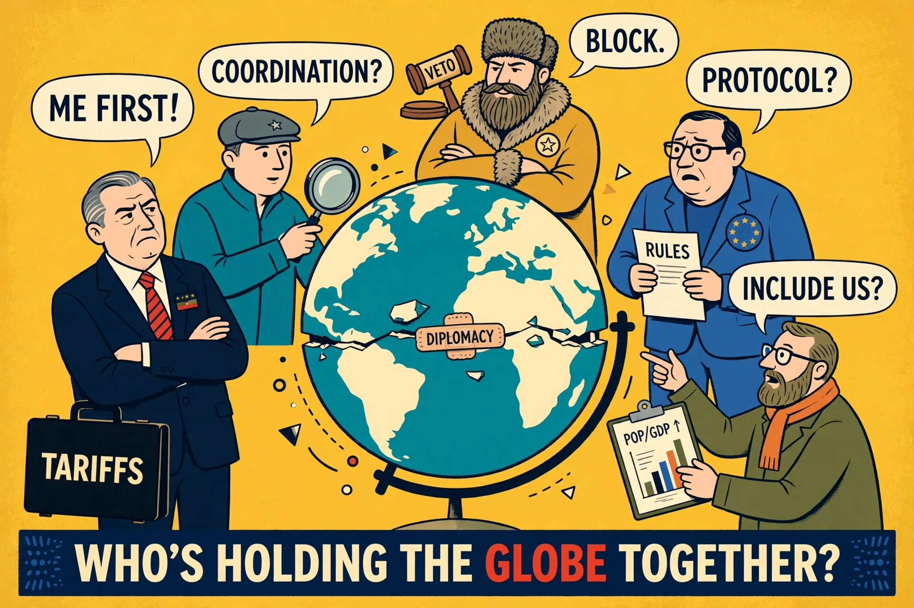

This week's edition
Analysis and argument lead The Economist

The Economist's homepage fronts the week's print edition: leaders (editorials), briefings and sections from Britain and the United States to finance and science — written anonymously, in a famously consistent house voice.
Leaders
The week's editorial arguments
Unsigned editorials state the paper's view.
International
The stories crossing borders
Global reporting and analysis.
Finance & economics
Markets, banking and economic policy
Home of the Big Mac index and Buttonwood's column tradition.
Science & technology
Research and innovation explained
The science desk's weekly survey.
Latest & most read
- The World Ahead: the year in prospect
- Espresso: the morning briefing app
- The Big Mac index: currency comparisons
About
Background on this news organisation: Wikipedia article.